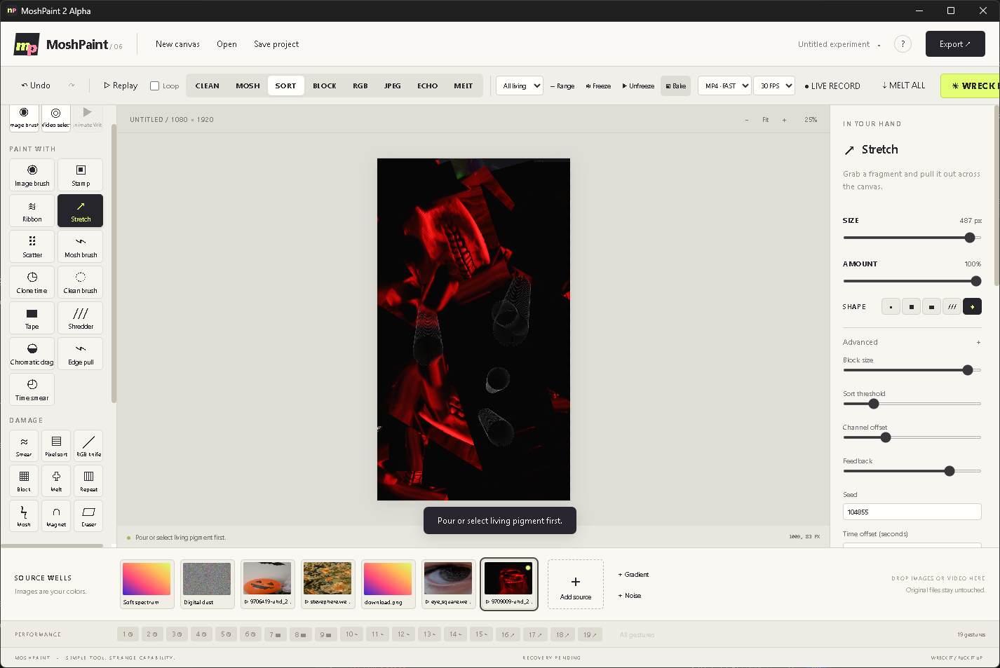

A machine by Travers MacMaster
MoshPaintGlitch Art & Experimental Painting Tool
MoshPaint is a browser and Windows image and video painting tool. Five processing engines transform source-brush samples and moving frames inside Living Brush marks, with shared color masks and Moirefield fills.

What you can make
Glitch Art & Experimental Painting Tool
Make layered digital glitch art, still image treatments and animated video-painting performances using imported media as pigment.
How the process works
Paint imported media with image brushes or living video tools. Apply Temporal Sculptor, Frequency Weaver, Recursive Feedback, Chromatic Physics or Motion Ecology to each brush sample before it lands. Color Territories provides shared masks for routing video and engine effects through selected regions.
Inputs and source material
Import images or browser-compatible videos into source wells, capture a camera clip, or create gradient, noise and Moirefield pigment. Camera capture requires browser permission.
Save and export
Save editable projects and export PNG, JPG or WebP stills and WebM motion in the browser. Supported browsers preserve the selected frame rate and duration during timed export. The Windows application also supports MP4 and GIF.
Getting started
How to use MoshPaint
- 01Open MoshPaint in the browser and add an image, video or camera clip to a source well.
- 02Choose a Live Brush Engine and mode to process each image or video sample as you paint. Use Color Territories to create a shared color mask, then route a supported effect through that selection.
- 03Save your editable project, or export a still or WebM video. Match the export frame rate to the source; use Live Record for real-time canvas or form movement.
Live processing
Five brush engines and shared masks
- Five processing engines transform image or video source-brush samples and moving frames inside Living Brush marks: Temporal Sculptor, Frequency Weaver, Recursive Feedback, Chromatic Physics and Motion Ecology.
- Choose an engine mode and effect mix. Source-brush samples replay with the stroke; processed Living Brush frames stay animated inside the mask during playback and video export. The source well stays unchanged.
- Color Territories supplies shared color masks for routing supported effects through selected regions.
- Moving brush previews and shared playback for matching video regions.
- Color Solidify controls inside Color Tolerance for dry and living masks, with original video retained when used for detection only.
- Integrated Moirefield pattern controls, project import, moving mask fills and animated source wells.
- Camera pigment, depth brushes, combinable surfaces and image-based relief.
- Place the current 3D view as a draggable still snapshot on the flat canvas, with transparent surroundings.
- Timed WebM exports with integer and fractional frame rates, including 23.976, 25, 29.97, 50 and 59.94 FPS.
Ginger
Circuit Memory
Inside MoshPaint


Output examples

From the same studio